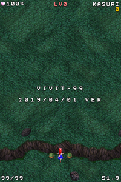

- Welcome to Touhou Wiki!
- Please register to edit. For assistance, check in with our Discord server or IRC channel.
VIVIT-99
| びびっと-99 VIVIT-99 | |
|---|---|
|
 | |
| Developer |
Ponchi |
| Publisher |
Shunsatsu sare do? |
| Released |
April 1, 2019 |
| Genre |
Game |
| Gameplay |
Single-player battle royale |
| Platforms |
Web browsers |
- Note: This article is part of the Seihou Project by the Doujin circle "Shunsatsu sare do?".

|
Attention: This article is a stub and it needs expanding with more information related to the article's topic. If you can add to it in any way, please do so. |
VIVIT-99[1] is a vertical-scrolling battle royale danmaku shoot 'em up created by Shunsatsu sare do? member and Seihou developer Ponchi for April Fool's Day 2019. This is the first Seihou game to be released in 11 years, following the release of the C74 version of Banshiryuu in 2008. The concept of the game parodies the mechanics of Arika's 2019 puzzle game Tetris 99.
This event ended at 24:00 (UTC+9).
In fact, VIVIT-99 isn't a Seihou game.[2]
Gameplay[edit]
The game is based off of the engine of the C67 release of Banshiryuu. The main mechanics of the game revolve around grazing in order to attack the other CPU players (the amount of which is adjustable at the start, from 9 to 99 players, including yourself) who are playing the same stage as you are, as displayed on both sides of the screen. When grazing, you send obstacle bullets that drift down from the top of the screen to a random opponent.
Continuous grazing makes your KASURI meter[3] rise in number, which increases the intensity of the bullets sent to your opponents, eventually causing them to fire in waves and aimed lanes. After every few seconds if left prone after starting a graze chain, your KASURI will be reset to 0 and convert into a Level as displayed on the top of the screen, with ~100 KASURI being required to increase your Level by 1. Your Level caps out at LV.99. If there is an insufficient amount of KASURI when the chain timer ends, your Level will not increase by any amount.
There are no lives or bombs in VIVIT-99; you instead have a health bar (starting at 100%) that decreases by 10% each time you get hit by a bullet. Getting hit also resets your KASURI meter to 0. If you die, a results screen showing your ranking and Level appears. The game automatically ends if all other 98 players are dead.
While you can only play as VIVIT-r at the start, you can play as Hirano Sakurasaki (who has a different shottype) through a secret method; by repeatedly clicking on the faded-out "Hirano" option above the はじめる/"Begin" button, it will activate, allowing you to change characters. If the "Hirano" setting is switched to ON, the game's title will be changed to HIRANON-99 (ひらのん-99).
The enemy bullet patterns are re-used from several stages from the C67 version of Banshiryuu, including stage 3's "ocean waves" and stage 6's concentric ring of enemies, and even a surprise appearance from the chevron lanes from Shuusou Gyoku's Extra Stage. The entire stage sequence lasts for 2 minutes, and will loop endlessly until there is one player remaining.
After a game session ends, be it through being the last one standing or dying, you are given the option to post your final results (which shows your survival ranking, Level, and the time elapsed in-game) on Twitter, where it can be featured alongside the other scores with the hashtag #VIVIT99.

Music[edit]
The only song used in the game is "Find Erich!", the stage 1 theme from the C74 version of Banshiryuu.
External links[edit]
| |||||||||||||||||||||||||||||||||||||||||||||||||||||
| |||||||||||||